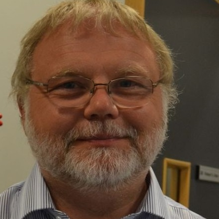

Prof Jon Gluyas
Biography
Jon is Head of the Department of Earth sciences at Durham University and holds the Dong/Ikon Chair in Geoenergy Carbon Capture & Storage. With career experiences in both industry and academia, he worked for 28 years within the oil industry. From 2001 to 2009 Jon co-founded two oil companies the latter one with $300 million of initial equity. His technical background relates to the redevelopment of old or abandoned fields which combined both geosciences and reservoir engineering. From 1999 Jon held a honorary chair in petroleum geoscience at Durham University and from 2009 took up a full time post as Professor in Geoenergy and Carbon Capture and Storage. This has included working for the UK's Department of Energy & Climate Change to evaluate bids for the UK's national CCS Demonstration Programme as well leadership of the UK's CCS Research Centre Development Board. Jon now researches carbon capture and storage, geothermal energy and petroleum geosciences while maintaining strong links with industry. Recent work in the field of geothermal energy includes being involved in the drilling of the three most recently drilled deep geothermal wells in the UK.
Publications
- Gluyas, J.G., Adams, C., Bhat, G., Craig, J. & Thusu, B. (2011) "Geothermal energy potential of Ladakh Granite, Jammu & Kashmir State and comparison with analogue enhanced geothermal systems." In New Paradigms of Exploration and Sustainable Mineral Development: Vision 2050 (Eds Varma, O.P., Sarkar, B.C., Varma, A.K., Mukherjee, M.K. and Singh, S.) Proceedings of 17th Indian Geological Congress, Roorkee, Abstract Volume p56
- Adams, C. A., Gluyas, J. G., & Mathias, S. A. (2010). "Application of hydrogeological parameters for evaluating the thermal resource potential of deep groundwater systems". In Proceedings of the British Hydrological Society Annual Symposium 2010, Newcastle upon Tyne. p1-6
- Younger, P. L., Gluyas, J. G., & Stephens, W. E. (2012). "Development of deep geothermal energy resources in the UK." Proceedings of the ICE-Energy, 165(1), p19-32